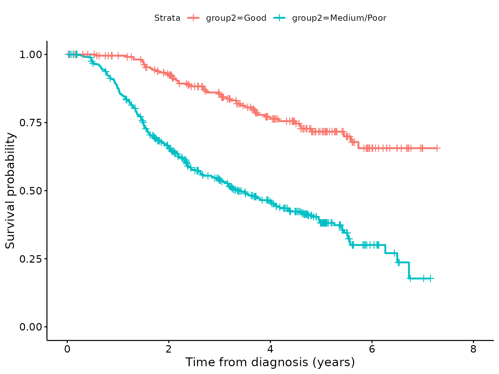
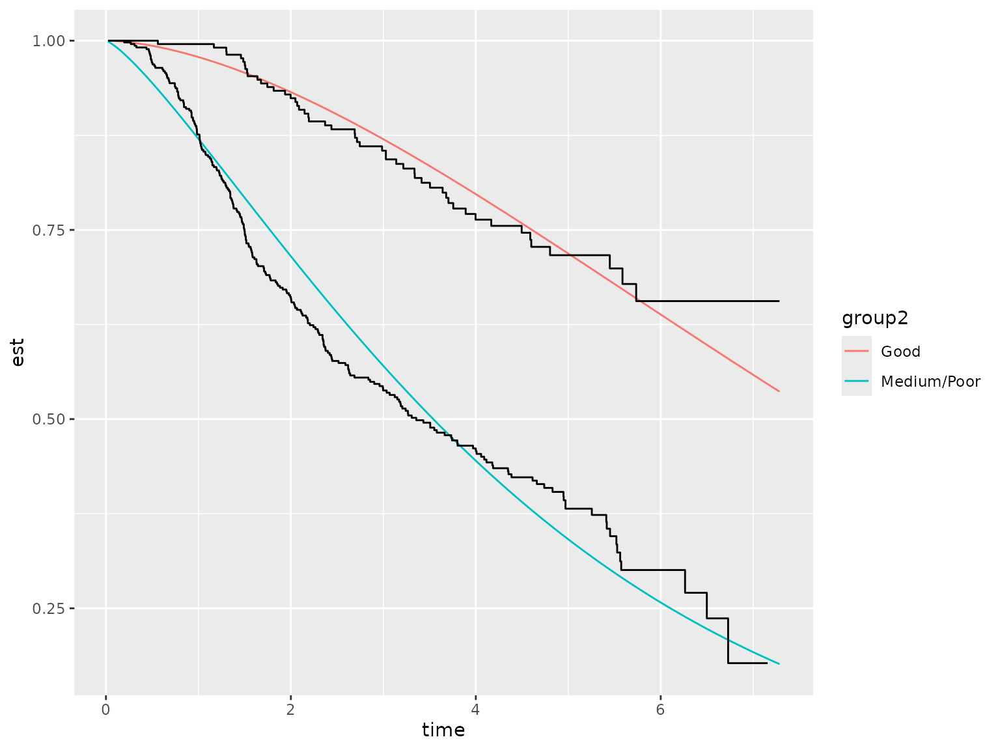
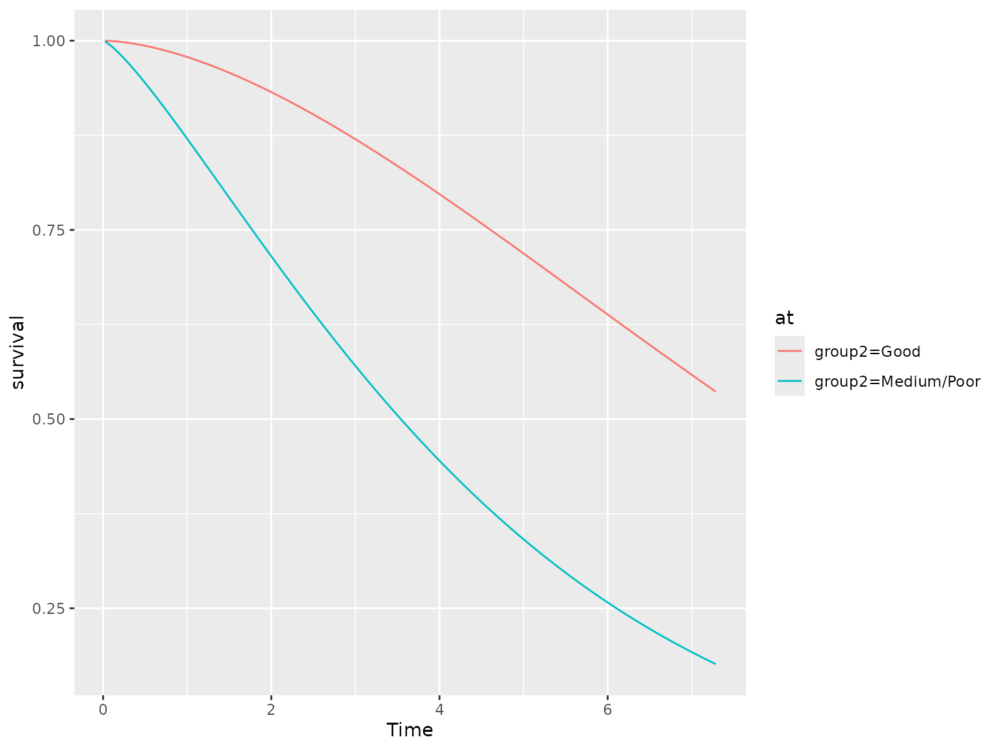
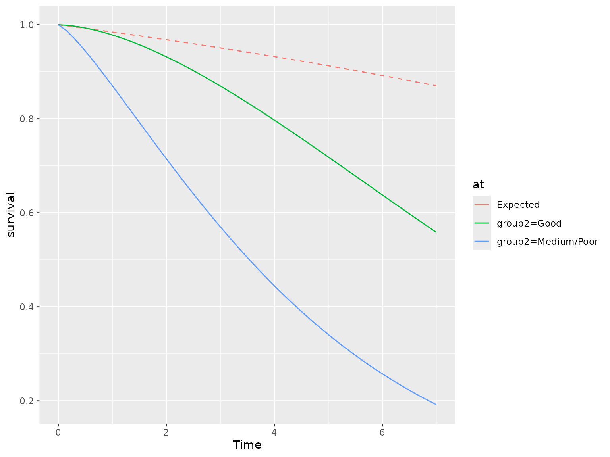
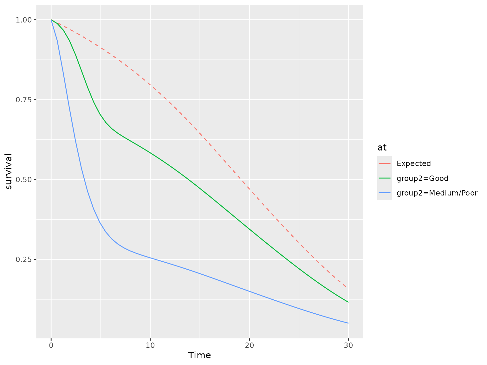

Calculating standardized survival measures in flexsurv
Michael Sweeting1
Source:vignettes/standsurv.Rmd
standsurv.RmdBackground
Standardized survival measures
standsurv is a post-estimation command that takes a
flexsurvreg object and calculates standardized survival
measures. After fitting a parametric survival model in
flexsurv it is often useful to compute and visualise the
marginal (or standardized) survival. For example, suppose a survival
model is fitted adjusted for treatment group, age, and sex. A separate
predicted survival curve can be obtained for each individual based on
their covariate pattern or a prediction can be obtained by setting
covariates to their mean values (both can be obtained using
summary.flexsurvreg), but it may be more useful to obtain
the marginal survival for each treatment group. Regression
standardization achieves this by fitting a regression model including
the treatment group \(Z\), covariates
\(X\) and possible interactions between
\(X\) and \(Z\). The standardized survival can be
estimated by obtaining predictions for every individual in the study
under each fixed treatment arm and averaging these individual-specific
estimates. The marginal survival over the distribution of covariates in
the study assuming all participants were assigned to arm \(Z=z\) is: \[\begin{equation}
S_s(t|Z=z) = E[S(t | Z=z, X)] = \frac{1}{N} \sum_{i=1}^{N} S(t | Z=z,
X=x_i)
\end{equation}\] for covariate values (vectors) \(x_1,...,x_{N}\). Here standarization is
done over all \(N\) patients in the
study and provides a counterfactual marginal estimate when setting \(Z=z\). The standardized survival is
therefore an estimate of the marginal survival if all study patients had
been assigned to group \(z\). Under
certain assumptions, differences in marginal survival provide estimates
of causal effects (Syriopoulou, Rutherford, and
Lambert (2021)) and certain estimands such as the average
treatment effect (ATE) can be targeted: \[
ATE = S_s(t|Z=z_1) - S_s(t|Z=z_0)]\] Alternatively, an average
treatment effect in the treated (ATET) estimand can be targeted by
averaging over only patients who were in the intervention treatment arm
\(Z=z_1\). Standardization estimates
can also be obtained for other target populations of interest. For
example it may be important to predict survival in an external
population with different characteristics to the study population.
The hazard function for the standardized survival can be obtained to understand how the shape of the hazard changes over time. This provides an estimate of the marginal hazard. It can be shown (Rutherford et al. (2020), Appendix I) that the hazard of the standardized survival can be calculated as \[\begin{equation} h_s(t|Z=z) = \frac{\sum_{i=1}^{N} S(t|Z=z,X=x_i)h(t|Z=z,X=x_i)}{\sum_{i=1}^{N} S(t | Z=z, X=x_i)} \end{equation}\] This is a weighted average of the \(N\) individual hazard functions, weighted by the probability of survival at time \(t\). Patients who are unlikely to have survived to \(t\) will contribute less weight to this hazard function.
Calculating marginal expected survival and hazard
In economic evaluations parametric survival models are used to extrapolate clinical trial data to estimate lifetime benefits. In this context it is often useful to plot marginal ‘expected’ (general population) survival alongside parametric models fitted and extrapolated from trial data in order to aid interpretation and for a visual comparison between the trial subjects and the population at large. Displaying expected survival and hazard functions can aid understanding of whether the assumed hazard and survival functions are credible (Rutherford et al. (2020)). Expected survival is defined as the all-cause survival in a general population with the same key characteristics as the study subjects. General population mortality rates are often taken from national lifetables that are stratified by age, sex, calendar year and occasionally other prognostic factors (e.g. deprivation indices).
The Ederer or “exact” method for estimating expected survival assumes
subjects in the trial population are not censored before the end of a
stated follow-up time (Ederer, Axtell, and Cutler
1961). The expected survival is then the survival we would expect
to see in an age-sex matched general population if all patients are
continuously followed-up. This is the approach used by
standsurv to calculate expected survival and is the “most
appropriate when doing forcasting, sample size calculations or other
predictions of the ‘future’ where censoring is not an issue” (Therneau 1999).
Based on the exact method, the marginal expected survival using background mortality rates is calculated using all \(N\) patients in the trial at any time point \(t\):
\[\begin{equation} S^*(t) = \frac{1}{N} \sum_{i=1}^N S_i^*(t) \end{equation}\] where \(S_i^*(t)\) is the expected survival for the \(i\)th subject at time \(t\). It follows that the marginal expected hazard is a weighted average of the expected hazard rates: \[\begin{equation} h^*(t) = \frac{ \sum_{i=1}^N S_i^*(t) h_i^*(t)}{\sum_{i=1}^N S_i^*(t)} \end{equation}\]
The expected survival for the \(i\)th subject at follow-up time \(t\) is calculated based on matching to the general population hazard rates. If lifetables are utilised these often provide mortality rates by sex (\(s\)), age (\(a\)) and calendar year (\(y\)), in yearly or 5-yearly categories. In practice the expected survival at time \(t\) for a given subject is calculated from the cumulative hazard. At a given follow-up time \(t\) this is the sum of \(h^*_{asy} \times \textrm{Number of days in state } (a,s,y)\) in the follow-up where \(h^*_{asy}\) is the expected hazard for age \(a\), sex \(s\), year \(y\). This requires follow-up time for each individual in the study dataset to be split by multiple timescales (e.g. age and year) into time epochs, which can be visualised as a Lexis diagram. Each epoch can then be matched to a corresponding expected mortality rate.
Incorporation of background mortality into survival models
Incorporating background mortality into survival models directly is recommended as it helps avoid extremely implausible projections (Rutherford et al. (2020)). This can be done using an excess mortality / relative survival model where population based ‘expected’ rates, often from life tables, are introduced to explain background mortality. The concept behind these models is to partition the all-cause mortality into excess mortality caused by the disease of interest and that due to other causes. A parametric model can then be applied to the isolated excess mortality. This may be particularly useful when making long-term extrapolations as the pattern of disease-specific mortality and other cause mortality are likely to be very different over time. Alternatively, if cause of death information is available and reliable, a separate cause-specific model can be fitted to the disease-specific mortality and other cause mortality.
The all-cause mortality rate at time \(t\) for individual \(i\) can be partitioned into two constituent parts: \[\begin{equation} h_i(t) = h^*_i(t) + \lambda_i(t) \end{equation}\] where \(h_i(t)\) is the all-cause mortality rate (hazard), \(h^*_i(t)\) is the expected or background mortality rate and \(\lambda_i(t)\) is the excess mortality rate. Equivalently, the hazard rates can be transformed to the survival scale which gives the all-cause survival at time \(t\) as the product of the expected survival and the relative survival: \[\begin{equation} S_i(t) = S^*_i(t) R_i(t) \end{equation}\] The relative survival, \(R_i(t)\), is therefore the ratio of all-cause survival and the expected survival in the background population. Typically, \(h_i^*(t)\) (and hence \(S_i^*(t)\)) are obtained from population lifetables. The expected mortality rates are assumed to be fixed and known and a parametric model is then used to estimate the relative survival (or equivalently excess hazard).
standsurv
standsurv is a post-estimation command that takes a
flexsurv regression and calculates standardized survival
measures and contrasts. Expected mortality rates and survival can also
be obtained. The main features of the command are that it enables the
calculation and plotting over any specified follow-up times of
- Marginal survival, hazard and restricted mean survival time (RMST) metrics
- Marginal expected (population) survival and hazard functions matched to the study population
- Marginal all-cause survival and all-cause hazard after fitting relative survival models
- Contrasts in survival, hazard and RMST metrics (e.g. marginal hazard ratio, differences in marginal RMST)
- Confidence intervals and standard errors for all measures and contrasts using either the delta method or bootstrapping
Through a simple syntax the user can specify the groups that they wish to calculate the marginal metrics. These groups can be formed by any combination of covariate values.
A worked example: the pbc dataset
For this example we will use data from the German Breast Cancer Study
Group 1984-1989, which is the R dataset bc found in the
flexsurv package. This dataset has death, or censoring
times for 686 primary node positive breast cancer patients together with
a 3-level prognostic group variable with levels “Good”, “Medium” and
“Poor”. For this demonstration we collapse the prognostic variable into
2 levels: “Good” and “Medium/Poor”. We also create some artificial ages
and diagnosis dates for the patients, along with assuming all patients
are female. We allow a correlation between the age at diagnosis for a
patient and their survival time so that age is a prognostic variable.
The mean age is 65 with a standard deviation of 5. We load this dataset
and create these additional variables.
data(bc)
set.seed(236236)
## Age at diagnosis is correlated with survival time. A longer survival time
## gives a younger mean age
bc$age <- rnorm(dim(bc)[1], mean = 65 - scale(bc$recyrs, scale=F), sd = 5)
## Create age at diagnosis in days - used later for matching to expected rates
bc$agedays <- floor(bc$age * 365.25)
## Create some random diagnosis dates between 01/01/1984 and 31/12/1989
bc$diag <- as.Date(floor(runif(dim(bc)[1], as.Date("01/01/1984", "%d/%m/%Y"),
as.Date("31/12/1989", "%d/%m/%Y"))),
origin="1970-01-01")
## Create sex (assume all are female)
bc$sex <- factor("female")
## 2-level prognostic variable
bc$group2 <- ifelse(bc$group=="Good", "Good", "Medium/Poor")
head(bc)
#> censrec rectime group recyrs age agedays diag sex group2
#> 1 0 1342 Good 3.676712 64.38839 23517 1986-09-15 female Good
#> 2 0 1578 Good 4.323288 67.31488 24586 1986-08-12 female Good
#> 3 0 1760 Good 4.821918 61.77993 22565 1985-11-10 female Good
#> 4 0 1152 Good 3.156164 65.20415 23815 1987-02-28 female Good
#> 5 0 967 Good 2.649315 68.74975 25110 1986-05-18 female Good
#> 6 0 629 Good 1.723288 64.53328 23570 1987-03-07 female GoodA plot of the Kaplan-Meier shows a clear separation in the survival curves between the two prognostic groups.
km <- survfit(Surv(recyrs, censrec)~group2, data=bc)
kmsurvplot <- ggsurvplot(km)
kmsurvplot + xlab("Time from diagnosis (years)")
A stratified Weibull model
We start by fitting a Weibull model to each group separately. One way
to do this is to fit a single saturated model whereby group affects both
the scale and shape parameters of the Weibull distribution. This
effectively means we have a separate scale and shape parameter for each
group, which is equivalent to fitting two separate models. Such a model
does not make a proportional hazards assumption and hence the hazard
ratio will change over time. The saturated model approach has advantages
as we can use the model to easily investigate treatment effects using
standsurv as we shall see later. Including group in the
main formula of flexsurvreg allows group to affect the
scale parameter of the Weibull distribution whilst we use the
anc argument in flexsurvreg to additionally
allow group to affect the shape parameter.
model.weibull.sep <- flexsurvreg(Surv(recyrs, censrec)~group2,
anc = list(shape = ~ group2),
data=bc, dist="weibullPH")
model.weibull.sep
#> Call:
#> flexsurvreg(formula = Surv(recyrs, censrec) ~ group2, anc = list(shape = ~group2),
#> data = bc, dist = "weibullPH")
#>
#> Estimates:
#> data mean est L95% U95% se
#> shape NA 1.68681 1.32989 2.13952 0.20461
#> scale NA 0.02187 0.01119 0.04274 0.00748
#> group2Medium/Poor 0.66618 1.84846 1.14534 2.55157 0.35874
#> shape(group2Medium/Poor) 0.66618 -0.28237 -0.54219 -0.02254 0.13257
#> exp(est) L95% U95%
#> shape NA NA NA
#> scale NA NA NA
#> group2Medium/Poor 6.35001 3.14351 12.82725
#> shape(group2Medium/Poor) 0.75400 0.58147 0.97771
#>
#> N = 686, Events: 299, Censored: 387
#> Total time at risk: 2113.425
#> Log-likelihood = -830.4043, df = 4
#> AIC = 1668.809Given that the model only contains group2 and no other
covariates we can obtain the predicted (fitted) survival for each of the
two groups using the summary function and storing these
predictions in a tidy data.frame with the argument
tidy=T.
predictions <- summary(model.weibull.sep, type = "survival", tidy=T)
ggplot() + geom_line(aes(x=time, y=est, color = group2), data=predictions) +
geom_step(aes(x=time, y=surv, group=strata), data=kmsurvplot$data.survplot)
The Weibull model does not appear to fit the data very well and so we
should try other parametric distributions. However, for illustration
purposes we shall continue using the Weibull model. We will now show
that the same predictions can be obtained from standsurv
but with the benefit of addition flexibility.
Using standsurv to calculate marginal survival
standsurv works similarly to the margins
command in R and standsurv in Stata by
allowing the user to specify a list of scenarios in which specific
covariates are fixed to certain values. This is done using the
at argument of standsurv to provide the list
of scenarios where each scenario is itself a list containing covariates
that are to be fixed. In our worked example the two scenarios are
list(group2 = "Good") and
list(group2 = "Medium/Poor"). Any covariates not specified
in the at scenarios are averaged over, hence creating
marginal, or standardized, estimates of the metric of interest. In the
example above, there are no other covariates in the model so we will get
the same answer as obtained from summary. But the later
worked example extends this to models containing other covariates. The
default is to calculate survival probabilities at the event times in the
data but this can be changed with the type and
t arguments, respectively. The returned object is a tidy
data.frame with columns named at1 up to atn
for the n scenarios specified in the at argument.
ss.weibull.sep.surv <- standsurv(model.weibull.sep,
type = "survival",
at = list(list(group2 = "Good"),
list(group2 = "Medium/Poor")))
ss.weibull.sep.surv
#> # A tibble: 574 × 3
#> time at1 at2
#> <dbl> <dbl> <dbl>
#> 1 0.0219 1.00 0.999
#> 2 0.0411 1.00 0.998
#> 3 0.0438 1.00 0.997
#> 4 0.0466 1.00 0.997
#> 5 0.0493 1.00 0.997
#> 6 0.0795 1.00 0.994
#> 7 0.115 0.999 0.991
#> 8 0.126 0.999 0.990
#> 9 0.156 0.999 0.987
#> 10 0.173 0.999 0.985
#> # ℹ 564 more rowsFurther details such as labels for the at scenarios are
stored in attributes of the standsurv object. These are
utilised by the plot function. A plot of the marginal
estimates can be easily produced using the plot function,
which produces a ggplot object.
plot(ss.weibull.sep.surv)
The plot can be easily further manipulated, for example by changing axis labels and adding further plots.
plot(ss.weibull.sep.surv) + xlab("Time since diagnosis (years)") +
geom_step(aes(x=time, y=surv, group=strata), data=kmsurvplot$data.survplot)
Other metrics: marginal hazards and marginal RMST
We can use the type argument to calculate marginal
hazards or restricted mean survival time (RMST). For example a plot of
the hazard functions for the two groups is obtained as follows:
ss.weibull.sep.haz <- standsurv(model.weibull.sep,
type = "hazard",
at = list(list(group2 = "Good"),
list(group2 = "Medium/Poor")))
plot(ss.weibull.sep.haz) + xlab("Time since diagnosis (years)")
Whilst a plot of RMST is given by
ss.weibull.sep.rmst <- standsurv(model.weibull.sep,
type = "rmst",
at = list(list(group2 = "Good"),
list(group2 = "Medium/Poor")))
plot(ss.weibull.sep.rmst) + xlab("Time since diagnosis (years)")
Calculating contrasts
The advantage of fitting a saturated model now becomes clear as we
can calculate contrasts between our at scenarios. Suppose
we are interested in the difference in the survival functions between
the two groups. This is easily calculated using the
contrast = "difference" argument, and a plot of the
contrast can be obtained using contrast = TRUE argument in
the plot function.
ss.weibull.sep.3 <- standsurv(model.weibull.sep,
type = "survival",
at = list(list(group2 = "Good"),
list(group2 = "Medium/Poor")),
contrast = "difference")
plot(ss.weibull.sep.3, contrast=TRUE) + xlab("Time since diagnosis (years)") +
ylab("Difference in survival probabilities") + geom_hline(yintercept = 0)
Alternatively, we may wish to visualise the implied hazard ratio from fitting separate Weibull models to the two groups. In the breast cancer example we see that the hazard ratio (treatment effect) starts very high before decreasing, suggesting that those with Medium/Poor prognosis start with a high elevated risk but have a continued excess risk up to the end of follow-up, compared to those with Good prognosis.
ss.weibull.sep.4 <- standsurv(model.weibull.sep,
type = "hazard",
at = list(list(group2 = "Good"),
list(group2 = "Medium/Poor")),
contrast = "ratio")
plot(ss.weibull.sep.4, contrast=TRUE) + xlab("Time since diagnosis (years)") +
ylab("Hazard ratio") + geom_hline(yintercept = 1)
Confidence intervals and standard errors
Confidence intervals and standard errors for both the metric of
interest and contrasts can be obtained either through bootstrapping or
using the delta method. Bootstrap confidence intervals are calculated by
specifying ci = TRUE, boot = TRUE, and
providing the number of bootstrap samples using B. We can
also set the seed using the seed argument to allow
reproducibility.
If instead the delta method is to be used to obtain confidence
intervals then we specify ci = TRUE,
boot = FALSE. The delta method obtains confidence intervals
by calculating standard errors for a given transformation of the metric
of interest and then assuming normality. The default is to use a log
transformation; hence if type = "survival" the confidence
intervals are symmetric for the log survival probabilities. Alternative
transformations can be specified using the trans
argument.
The code below shows confidence intervals for marginal survival
calculated through a bootstrap method (with B = 100)
compared to a delta method. For computational efficiency here we only
predict for 10 time points.
ss.weibull.sep.boot <- standsurv(model.weibull.sep,
type = "survival",
at = list(list(group2 = "Good"),
list(group2 = "Medium/Poor")),
t = seq(0,7,length=10),
ci = TRUE,
boot = TRUE,
B = 100,
seed = 2367)
#> Calculating bootstrap standard errors / confidence intervals
ss.weibull.sep.deltam <- standsurv(model.weibull.sep,
type = "survival",
at = list(list(group2 = "Good"),
list(group2 = "Medium/Poor")),
t = seq(0,7,length=10),
ci = TRUE,
boot = FALSE)
#> Calculating standard errors / confidence intervals using delta method
plot(ss.weibull.sep.boot, ci = TRUE) +
geom_ribbon(aes(x=time, ymin=survival_lci, ymax=survival_uci, color=at, linetype = "Delta method"), fill=NA,
data=attr(ss.weibull.sep.deltam,"standpred_at")) +
scale_linetype_manual(values = c("Bootstrap" = "solid", "Delta method"= "dashed")) +
ggtitle("Comparison of bootstrap and delta method confidence intervals")
#> Scale for linetype is already present.
#> Adding another scale for linetype, which will replace the existing scale.
Adding age as a covariate
Suppose age has been added as a covariate to the survival model. If
age is not included in our at scenarios
standsurv will by default produce standardized estimates of
survival averaged over the age distribution in our study population.
Alternatively we could pass a new prediction dataset to
standsurv and obtain standardized estimates for this
population. As an example, we obtain marginal survival estimates after
fitting a stratified Weibull model, firstly standardized to the
age-distribution of our study population and secondly standardized to an
older population with mean age of 75 and standard deviation 5.
model.weibull.age.sep <- flexsurvreg(Surv(recyrs, censrec)~group2 + age,
anc = list(shape = ~ group2 + age),
data=bc, dist="weibullPH")
## Marginal survival standardized to age distribution of study population
ss.weibull.age.sep.surv <- standsurv(model.weibull.age.sep,
type = "survival",
at = list(list(group2 = "Good"),
list(group2 = "Medium/Poor")),
t = seq(0,7,length=50)
)
## Marginal survival standardized to an older population
# create a new prediction dataset as a copy of the bc data but whose ages are drawn from
# a normal distribution with mean age 75, sd 5.
newpred.data <- bc
set.seed(247)
newpred.data$age = rnorm(dim(bc)[1], 75, 5)
ss.weibull.age2.sep.surv <- standsurv(model.weibull.age.sep,
type = "survival",
at = list(list(group2 = "Good"),
list(group2 = "Medium/Poor")),
t = seq(0,7,length=50),
newdata=newpred.data)
## Overlay both marginal survival curves
plot(ss.weibull.age.sep.surv) +
geom_line(aes(x=time, y=survival, color=at, linetype = "Older population"),
data = attr(ss.weibull.age2.sep.surv, "standpred_at") ) +
scale_linetype_manual(values = c("Study" = "solid", "Older population"= "dashed"))
#> Scale for linetype is already present.
#> Adding another scale for linetype, which will replace the existing scale.
Calculating expected survival and hazard in
standsurv
To overlay marginal expected survival or hazard curves we require a
lifetable of population hazard rates. To demonstrate we use the US
lifetable that comes with the survival package, called
survexp.us. Other lifetables can be obtained directly from
the Human Mortality Database (HMD) using the HMDHFDplus
package.
The survexp.us lifetable is a ratetable
object with stratification factors age, sex and year. It gives rates of
mortality per person-day for combinations of the stratification factors.
A summary of the survexp.us object shows that the
time-scale is in days.
summary(survexp.us)
#> Rate table with 3 dimensions:
#> age ranges from 0 to 39812.25; with 110 categories
#> sex has levels of: male female
#> year ranges from 1940-01-01 to 2014-01-01; with 75 categoriesTo use the lifetable to get expected rates for our trial population
we need to match age, sex and year variables in our dataset to those in
the ratetable. We can use the rmap argument to do this.
standsurv utilises the survexp function in the
survival package to calculate expected survival over the
times specified in t using the ‘exact’ method of Ederer. We
note that sex in our data is coded the same as in the
ratetable (“male” and “female”) and importantly that we
have variables that record both age at diagnosis and diagnosis date in
days. It is important that the user ensures that the study data are
correctly coded and have variables on the same timescale as in the
ratetable so that matching is successful. The code below
demonstrates that for our data we therefore need to match the
year variable in the ratetable to the
diag variable in our study data, and the age
variable in the ratetable to the agedays
variable in our study data.
We need to specify three more arguments in standsurv.
First, the lifetable, which must be a ratetable object and
is specified using the ratetable argument. Second, we may
need to pass our trial dataset to standsurv if the
stratifying factors do not appear as covariates in the
flexsurv model. Finally, we need to be careful to tell
standsurv what the time scale transformation is between the
fitted flexsurv model and the time scale in
ratetable. We can use the scale.ratetable
argument to do this. Typically ratetable objects are expressed in days
(e.g. rates per person-day). The default is therefore
scale.ratetable = 365.25, which indicates that the survival
model was fitted in years but the ratetable is in days.
After running standsurv we can plot the expected
survival (or hazard) by using the argument expected = TRUE
in the plot() function.
ss.weibull.sep.expected <- standsurv(model.weibull.sep,
type = "survival",
at = list(list(group2 = "Good"),
list(group2 = "Medium/Poor")),
t = seq(0,7,length=50),
rmap=list(sex = sex,
year = diag,
age = agedays
),
ratetable = survexp.us,
scale.ratetable = 365.25,
newdata = bc
)
#> Calculating marginal expected survival and hazard
plot(ss.weibull.sep.expected, expected = T)
We can see that the marginal expected survival is much higher than the marginal (predicted) survival for our breast cancer population. We can also obtain the expected hazards:
ss.weibull.sep.expectedh <- standsurv(model.weibull.sep,
type = "hazard",
at = list(list(group2 = "Good"),
list(group2 = "Medium/Poor")),
t = seq(0,7,length=50),
rmap=list(sex = sex,
year = diag,
age = agedays
),
ratetable = survexp.us,
scale.ratetable = 365.25,
newdata = bc
)
#> Calculating marginal expected survival and hazard
plot(ss.weibull.sep.expectedh, expected = T)
The hazard plot shows that our model is predicting an increasing hazard over time for the cancer population, which remains significantly higher than the expected hazard in the general population. The monotonically increasing hazard imposed by the Weibull distribution may be implausible and this may make us question the suitability of a Weibull model if we wish to extrapolate.
Incorporation of background mortality
A relative survival model can be fitted using flexsurv
by incorporating background mortality rates. The model then estimates
excess hazard rates and relative survival measures. For prediction
purposes, following the fitting of a relative survival model,
standsurv allows the user to either obtain marginal
predictions of relative survival / excess hazard or of all-cause
survival / all-cause hazard. The latter are calculated by multiplying
relative survival estimates with expected survival to get all-cause
survival, or by adding excess hazard rates to expected hazard to get
all-cause hazard.
We demonstrate this by fitting a relative survival cure model to the breast cancer data and obtaining predicted all-cause survival and all-cause hazard up to 30-years after diagnosis. A mixture cure model makes the assumption that a proportion of the study population will never experience the event. In a relative survival framework the cure model assumes that the excess mortality rate approaches zero (or equivalently the relative survival reaches an asymptote determined by the cure fraction). We fit a relative survival cure model with a Weibull distribution assumed for the uncured.
The relative survival mixture-cure model is fitted below. We must
pass to flexsurvcure the expected hazard rates at the event
/ censoring time for each individual, as it is the expected rates at the
event times that are used in the likelihood function for a parametric
relative survival model. For this we need to initally do some data
wrangling. Firstly, we calculate attained age and attained year (in
whole years) at the event time for all study subjects. Secondly, we join
the data with the expected rates using the matching variables attained
age, attained year and sex. In the example, we express the expected rate
as per person-year as this is the timescale used in the flexsurv
regression model.
## reshape US lifetable to be a tidy data.frame, and convert rates to per person-year as flexsurv regression is in years
survexp.us.df <- as.data.frame.table(survexp.us, responseName = "exprate") %>%
mutate(exprate = 365.25 * exprate)
survexp.us.df$age <- as.numeric(as.character(survexp.us.df$age))
survexp.us.df$year <- as.numeric(as.character(survexp.us.df$year))
## Obtain attained age and attained calendar year in (whole) years
bc <- bc %>% mutate(attained.age.yr = floor(age + recyrs),
attained.year = lubridate::year(diag + rectime))
## merge in (left join) expected rates at event time
bc <- bc %>% left_join(survexp.us.df, by = c("attained.age.yr"="age",
"attained.year"="year",
"sex"="sex"))
# A stratified relative survival mixture-cure model
model.weibull.sep.rs <- flexsurvcure(Surv(recyrs, censrec)~group2,
anc = list(shape = ~ group2,
scale = ~ group2),
data=bc, dist="weibullPH",
bhazard=exprate)
model.weibull.sep.rs
#> Call:
#> flexsurvcure(formula = Surv(recyrs, censrec) ~ group2, data = bc,
#> bhazard = exprate, dist = "weibullPH", anc = list(shape = ~group2,
#> scale = ~group2))
#>
#> Estimates:
#> data mean est L95% U95% se
#> theta NA 0.73277 0.60988 0.82787 NA
#> shape NA 2.62590 1.88756 3.65306 0.44231
#> scale NA 0.02973 0.00993 0.08896 0.01663
#> group2Medium/Poor 0.66618 -1.76733 -2.48411 -1.05055 0.36571
#> shape(group2Medium/Poor) 0.66618 -0.52951 -0.88563 -0.17340 0.18170
#> scale(group2Medium/Poor) 0.66618 1.81159 0.68352 2.93965 0.57555
#> exp(est) L95% U95%
#> theta NA NA NA
#> shape NA NA NA
#> scale NA NA NA
#> group2Medium/Poor 0.17079 0.08340 0.34974
#> shape(group2Medium/Poor) 0.58889 0.41245 0.84080
#> scale(group2Medium/Poor) 6.12014 1.98084 18.90922
#>
#> N = 686, Events: 299, Censored: 387
#> Total time at risk: 2113.425
#> Log-likelihood = -784.3236, df = 6
#> AIC = 1580.647We can now use standsurv to obtain all-cause survival
and hazard predictions using type = "survival" and
type = "hazard". If instead we had wanted predictions of
relative survival or excess hazards we would use
type = "relsurvival" and
type = "excesshazard", respectively.
## All-cause survival
ss.weibull.sep.rs.surv <- standsurv(model.weibull.sep.rs,
type = "survival",
at = list(list(group2 = "Good"),
list(group2 = "Medium/Poor")),
t = seq(0,30,length=50),
rmap=list(sex = sex,
year = diag,
age = agedays
),
ratetable = survexp.us,
scale.ratetable = 365.25,
newdata = bc
)
#> Marginal all-cause survival will be calculated
#> Calculating marginal expected survival and hazard
plot(ss.weibull.sep.rs.surv, expected = T)
# All-cause hazard
ss.weibull.sep.rs.haz <- standsurv(model.weibull.sep.rs,
type = "hazard",
at = list(list(group2 = "Good"),
list(group2 = "Medium/Poor")),
t = seq(0,30,length=50),
rmap=list(sex = sex,
year = diag,
age = agedays
),
ratetable = survexp.us,
scale.ratetable = 365.25,
newdata = bc
)
#> Marginal all-cause hazard will be calculated
#> Calculating marginal expected survival and hazard
plot(ss.weibull.sep.rs.haz, expected = T)
The marginal excess hazard is now unimodal since the cure model is forcing the initially increasing excess hazard to tend to zero in the long-term where only ‘cured’ subjects remain. The marginal all-cause hazard tends to the expected hazard and follows it thereafter.
A plot of the excess hazard confirms this.
# Excess hazard
ss.weibull.sep.rs.excesshaz <- standsurv(model.weibull.sep.rs,
type = "excesshazard",
at = list(list(group2 = "Good"),
list(group2 = "Medium/Poor")),
t = seq(0,30,length=50),
rmap=list(sex = sex,
year = diag,
age = agedays
),
ratetable = survexp.us,
scale.ratetable = 365.25,
newdata = bc
)
#> Calculating marginal expected survival and hazard
plot(ss.weibull.sep.rs.excesshaz)
Conclusions
standsurv is a powerful post-estimation command that
allows easy calculation of a number of useful prediction metrics.
Contrasts can be made between any counterfactual populations of interest
and, through regression standardisation, allows the targeting of
marginal estimands. Confidence intervals, via the delta method or
bootstrapping, are available and benchmarking against or incorporating
background mortality rates is also supported.